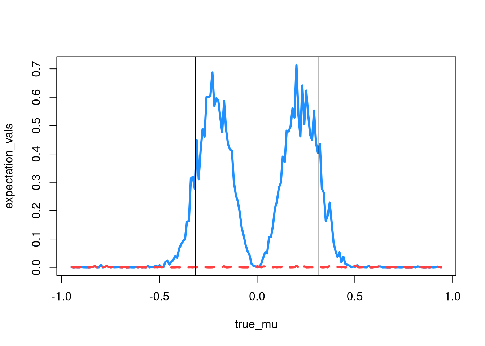
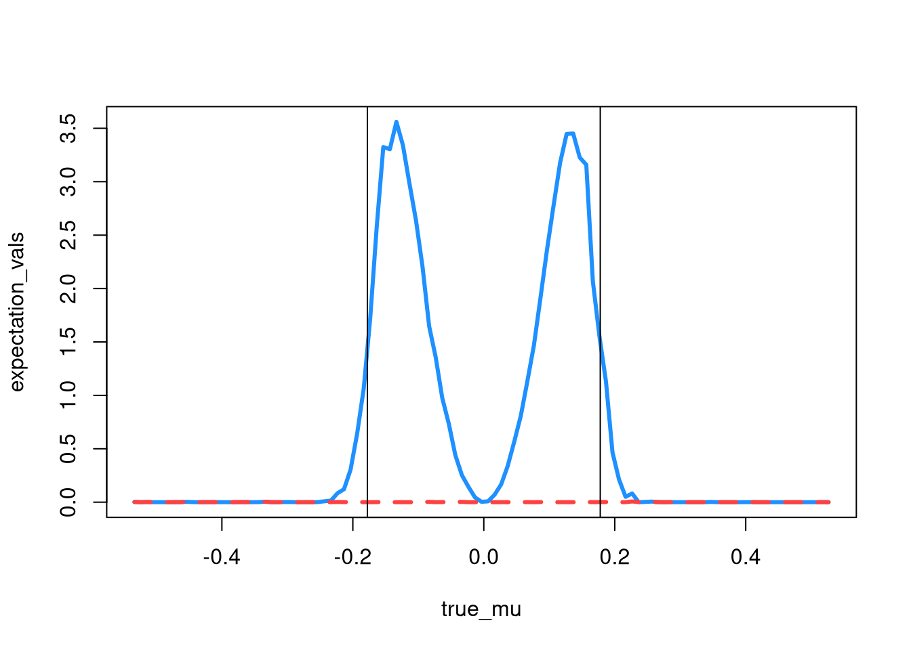
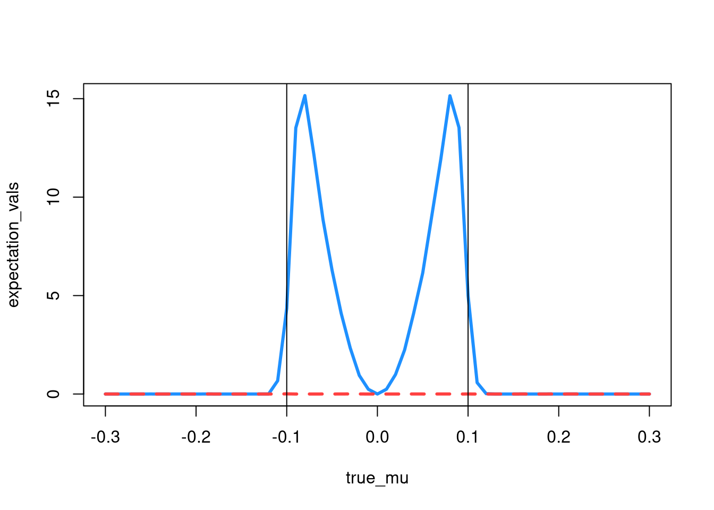

suppressPackageStartupMessages({
library(MASS)
library(tidyverse)
})5.3
a)
I found it easier to find the complement of event \(1-A_n = A_n^c\) first,
With \(\mu = 0\), we see that the probability is 1. Then \(1-A_n^c = 1-1 = 0\)
n=10000
mu=0
sd=1
a = (sqrt(n) / sd) * ((1/n^.25) - mu)
b = (sqrt(n) / sd) * (-(1/n^.25) - mu)
1 - pnorm(a,0,1) - pnorm(b,0,1)[1] -7.619853e-24and with \(\mu \ne 0\), the probability is 0, so the compliment,\(1-A_n^c = 1-0 = 1\)
n=10000
mu=10
sd=1
a = (sqrt(n) / sd) * ((1/n^.25) - mu)
b = (sqrt(n) / sd) * (-(1/n^.25) - mu)
1 - pnorm(a,0,1) - pnorm(b,0,1)[1] 1e)
ii)
Again using the complement, I evaluate \(A^c_n\) using n = 10,000, h = 5, and sd=1. We see that this equals 0 \(\forall \mu_n\).
n=10000
h = 5
mu_n = 5/sqrt(n)
sd=1
a = (sqrt(n) / sd) * ((1/n^.25) - mu_n)
b = (sqrt(n) / sd) * (-(1/n^.25) - mu_n)
1 - pnorm(a,0,1) - pnorm(b,0,1)[1] 2.866516e-07g)
Irregularity is problematic because, and confirming with the plots below, \(\tilde{\mu}\) does a very poor job of estimating the true parameter from about -0.1 to 0.1. This violates what we want from the N-P Paradigm, so we could not have good error controls over the entire model space using this estimator. So because \(\hat{\mu}\) is not irregular we see that it has a constistent value for the expectation over the whole range of true mu values while \(\tilde{\mu}\) spikes over certain ranges of values. However, it does well at a true \(\mu = 0\), though we wouldn’t want to use it unless we were almost certain the true \(\mu\) was in fact 0.
A_n = function(X){
# function to calculate indicator
n = length(X)
ind = abs(mean(X)) > (1/n)^0.25
return(ind)
}
n_list = c(100, 1000, 10000)
for (n in n_list){
true_mu = seq(-3 * n^(-0.25), 3 * n^(-0.25), 0.01)
expectation_vals = c()
x_bar_means = c()
for (mu in true_mu) {
# initialize
mc_vals = c()
x_bar_vals = c()
for (i in 1:1000){
# monte carlo
X = rnorm(n, mu, 1)
X_bar = mean(X)
Y_n = (1+A_n(X))/2
mu_tilde = X_bar * Y_n
# store values
mc_vals = c(mc_vals, mu_tilde)
x_bar_vals = c(x_bar_vals, X_bar)
}
# calculation
mc_mean = mean(mc_vals)
xbar_mean = mean(x_bar_vals)
expectation = n * mean((mc_mean - mu)^2)
x_bar_expect = n * mean((xbar_mean - mu)^2)
# storing means
expectation_vals = c(expectation_vals, expectation)
x_bar_means = c(x_bar_means, x_bar_expect)
}
plot(true_mu, expectation_vals, type='l', lwd=3, lty=1, col='dodgerblue')
lines(true_mu, x_bar_means, type='l', lwd=3, lty=2, col='brown1')
abline(v = n^(-1/4))
abline(v = -n^(-1/4))
}


5.5
a)
iii) and v)
My methodology was to loop through the countries, rows, and columns, and calculate the statistics of interest. Then, as a comparison, find the difference between \(2log\Lambda(X_k,H_I)\) and \(T_k\). It seems the values are close in countries like Italy, Yugoslavia, and Finland, and far away in countries like Spain, the Phillipines and Spain.
vi)
- is also calculated below, and is performed by taking the sum of the test statistic across all countries
global_sum = c()
country_name = names(data)
for (i in 1:length(data)){
t = data[[i]]
country = country_name[i]
vals = c() # likelihood ratio vals
T_k_values = c() # chi square values
n_k = sum(t)
r_sum = rowSums(t)
c_sum = colSums(t)
for (i in 1:3){
for (j in 1:3){
# select xij value
xij = t[i,j]
# calculate statistics
E_ij = (r_sum[i] * c_sum[j])/n_k
f = 2 * ((xij * log(xij) - xij) - ((xij * log(E_ij)) - E_ij))
vals = c(vals,f)
#chi squared stat
T_ijk = (xij - E_ij)^2 / E_ij
T_k_values = c(T_k_values, T_ijk)
}
}
T_k = sum(T_k_values)
V_sum = sum(vals)
global_sum = c(global_sum, V_sum)
compare = V_sum - T_k
p_value = pchisq(V_sum, 4, lower.tail = F)
cat(country, 'Difference : ', compare, "; P Value : ", p_value, "\n")
}Australia Difference : -71.09597 ; P Value : 1.547168e-96
Belgium Difference : -105.8371 ; P Value : 1.237476e-134
Frane Difference : -75.91532 ; P Value : 0
Hungary Difference : -31.00982 ; P Value : 0
Italy Difference : -1.409348 ; P Value : 1.119295e-142
Japan Difference : 12.61146 ; P Value : 1.13328e-121
Phillipines Difference : -280.0931 ; P Value : 5.53404e-273
Spain Difference : 425.7491 ; P Value : 0
USA Difference : -85.97342 ; P Value : 0
WestGermany Difference : -121.3209 ; P Value : 0
WestMalaysia Difference : -59.93569 ; P Value : 4.297791e-273
Yugoslavia Difference : -1.285559 ; P Value : 4.602893e-37
Denmark Difference : -4.908024 ; P Value : 2.59003e-43
Finland Difference : -0.06585406 ; P Value : 1.629016e-25
Norway Difference : -5.496425 ; P Value : 6.292721e-19
Sweden Difference : -15.61604 ; P Value : 2.465429e-25 total = sum(global_sum)
global_p = pchisq(total, 64, lower.tail=F)
cat("Global P-Value : ", global_p)Global P-Value : 0b)
iii) / iv) / vi)
Code to optimize and find the maximum log likelihood is below, along with individual country p-values and a global p-value for part vi). In part iv), the test statistic value is 0.855 verified below, and we see that \(\delta_1\) and \(\delta_3\) are positive, indicating positive inheritance, while \(\delta_2\) indicates negative inheritance. So sons actively avoided blue-collar work if their father’s had blue collar jobs but were more likely to choose white-collar or farm work if those were their father’s professions.
It looks like this is almost completely true for the other countries, which is a bit surprising that farm work does not have negative inheritance. Maybe if the father owns a farm, the son is very likely to take over. It also makes sense that sons with white-collar fathers would most likely not take up a blue-collar job.
log_lkh = function(l_theta, x){
theta = exp(l_theta)
d1 = theta[1]
d2 = theta[2]
d3 = theta[3]
alpha2 = theta[4]
alpha3 = theta[5]
beta2 = theta[6]
beta3 = theta[7]
lambda = theta[8]
theta_mat = lambda * matrix(c(d1, beta2, beta3,
alpha2, d2 * alpha2 * beta2, alpha2 * beta3,
alpha3, alpha3 * beta2, d3 * alpha3 * beta3),3,3,
byrow=T)
log_mat = log(theta_mat)
f = -sum(x * log_mat - theta_mat)
f
}
global_sum = c()
for (i in 1:length(data)){
t = data[[i]]
opt = optim(par = c(1,1,1,1,1,1,1,1), log_lkh, x = t, method="BFGS")
delta = opt$par[1:3]
mle = -opt$value
country = country_name[i]
vals = c() # likelihood ratio vals
for (i in 1:3){
for (j in 1:3){
# select xij value
xij = t[i,j]
# calculate statistic
f = xij * log(xij) - xij
vals = c(vals,f)
}
}
lrt = 2 * (sum(vals) - mle)
global_sum = c(global_sum, lrt)
p_value = pchisq(lrt, 4, lower.tail = F)
cat(country, 'Value : ', lrt, "; P-Value : ", p_value, "\n")
cat(country, 'delta values : ', delta, "\n", "\n")
}Australia Value : 11.73796 ; P-Value : 0.01941003
Australia delta values : 1.030619 0.2265895 2.401344
Belgium Value : 10.6225 ; P-Value : 0.03115082
Belgium delta values : 1.404585 0.527517 3.259004
Frane Value : 22.97042 ; P-Value : 0.0001283611
Frane delta values : 1.354031 0.2661022 3.347636
Hungary Value : 0.8554593 ; P-Value : 0.9308621
Hungary delta values : 2.698505 -0.8539063 3.053352
Italy Value : 1.773136 ; P-Value : 0.7773934
Italy delta values : 2.134687 0.01783844 2.825704
Japan Value : 1.266833 ; P-Value : 0.8669771
Japan delta values : 1.363813 0.4536371 2.039854
Phillipines Value : 0.07651477 ; P-Value : 0.9992866
Phillipines delta values : 1.302148 0.636987 2.110648
Spain Value : 68.35058 ; P-Value : 5.059381e-14
Spain delta values : 1.767542 0.4450499 2.718206
USA Value : 20.95466 ; P-Value : 0.000323291
USA delta values : 1.745549 -0.3076404 2.798695
WestGermany Value : 6.342103 ; P-Value : 0.175015
WestGermany delta values : 1.588162 0.3669252 1.672962
WestMalaysia Value : 0.2243697 ; P-Value : 0.9941587
WestMalaysia delta values : 1.127708 0.1638802 1.912759
Yugoslavia Value : 0.6905396 ; P-Value : 0.9524904
Yugoslavia delta values : 1.498647 0.3263042 1.944188
Denmark Value : 0.09040986 ; P-Value : 0.9990085
Denmark delta values : 1.528356 0.09070624 3.207579
Finland Value : 2.797152 ; P-Value : 0.5923244
Finland delta values : 0.9738435 0.8804998 1.969367
Norway Value : 0.1690122 ; P-Value : 0.9966243
Norway delta values : 1.217378 0.1140759 1.933176
Sweden Value : 0.1430917 ; P-Value : 0.9975595
Sweden delta values : 1.636189 0.00663069 3.259265
total = sum(global_sum)
global_p = pchisq(total, 64, lower.tail=F)
cat("Global P-Value : ", global_p)Global P-Value : 9.674784e-09v)
First, we note that we now have a chi-squared distribution with 1 degree of freedom, since the full parameter space has dimension 9 and our restricted space, \(\Theta_Q\) has dimension 8 since we now have 8 parameters, \(\lambda_k, \{ \alpha_{ik}\}_{2}^{3},\{\beta\}_{2}^{3}, and \ \delta_1, \delta_2, \delta_3.\)
Now, I would grid search across ranges of the parameters, and for each distinct combination of parameters, create 10,000 synthetic data sets by drawing each \(X_{ijk}\) from a POIS\((\theta^{(k)}_{ij})\), compute the statistic \(2log\Lambda(X_k;H_Q)\), average across the data sets to create an MC average, plot a histogram of the average statistic, and visually compare to a \(\chi^2_1\) and see if they match. It should look similar regardless of the combination of parameters if it is truly from the distribution.